Edit Mode - Mesh Menu
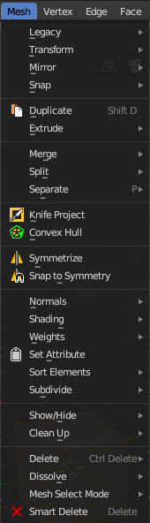
The Mesh Menu in Edit Mode contains the tools to manipulate the mesh geometry in Edit mode. It just exists for Mesh Objects.
Lots of functionality that could also belong here can also be found in the Tool Shelf. The difference is that the tools in the tool shelf are easier to access. And so it contains the most used tools for the daily work. While the Mesh menu contains the not so often used tools. Or tools where you use the hotkey anyway. Delete for example.
Legacy
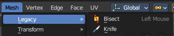
The legacy sub menu contains tools that exists in the tool shelf already. It's the old way to do things. Different to the tools in the tool shelf, these tools are usually modal. And performs once. You have to call them again in case you want to repeat the tool.
Bisect
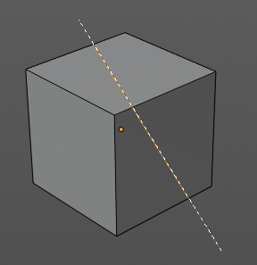
Bisect cuts geometry along a plane. This description is a bit misleading though. You simply cut through the whole geometry by defining a line. And the cut goes through the geometry from the current view.
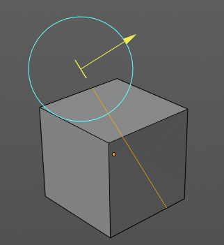
When you have set your cut and release the mouse then you reveal a widget with which you can move and rotate the cut. Clicking at the arrow and drag moves the cut. Clicking at the circle and drag rotates the cut.
Last Operator Bisect
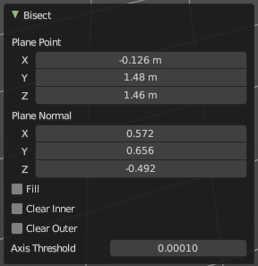
| Entry | What it does |
|---|---|
| Plane Point X , Y , Z | Defines the start point of the Bisect cut. |
| Plane Normal X , Y , Z | The direction in which the bisect points. |
| Fill | Fills the cut. |
| Clear Inner | Removes the inner part of the face to cut. |
| Clear Outer | Removes the outer part of the face to cut. |
| Axis threshold | Axis threshold. |
Knife tool
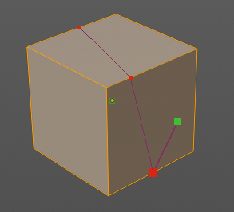
The Knife tool cuts the geometry, and adds edges. When it crosses existing geometry then it adds a vertice at the crossing point.
Usage: activate the tool, left click to define the starting point. This can also be a point in the middle of a face. But ideally you choose an existing vertice or an edge as the start and endpoints. The knife tool tries to snap to them when you get close with the mouse cursor.
When done press Enter or Spacebar to confirm. Right click abandons the operation.
When you create a vertice in the middle of a face, then the knife tool will try to connect this vertice by an existing vertice of this face when you confirm with spacebar.
Hotkey functionality in the footer text
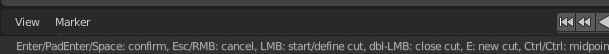
Have a look at the footer when you work with this tool. Here you will find further instructions and hotkeys.
Enter, Pad Enter, Spacebar - confirm
Esc key, RMB - cancel the operation
LMB start the cut
Double LMB - close the cut
E - create new cut
Ctrl or Shift while dragging - Snap to the middle of an edge
Z - cut through the whole geometry, also the backfaces.
MMB - pan the view.
Alt MMB - rotate the view.
Transform
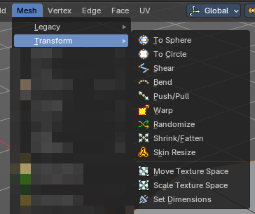
To Sphere
Shapes a selection of objects into the shape of a sphere. The calculation happens with the object origins.
In Object mode this tools requires to have more than one object selected.
Usage

Select the vertices, activate the tool, then drag the mouse in the 3D viewport. In the header you will read the current factor then. Which tells you how close you are towards the sphere shape.
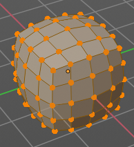
Last Operator To Sphere

| Entry | What it does |
|---|---|
| Factor | The factor to transform the selection into a shape form. |
| Mirror Editing | Enable mirror editing. |
Proportional editing

Enables proportional editing. Activating proportional editing reveals further settings.
| Entry | What it does |
|---|---|
| Proportional Falloff | Adjust the falloff methods. |
| Proportional Size | See and adjust the falloff radius. |
| Connected | The proportional falloff gets calculated for connected parts only. |
| Projected(2D) | The proportional falloff gets calculated in the screen space. Depth doesn't play a role. When it's in the radius, then it gets calculated. |
To Circle
Transforms selected vertices into a circular arrangement.
Useful for reshaping loops, aligning geometry, or creating radial structures with precision.
Usage
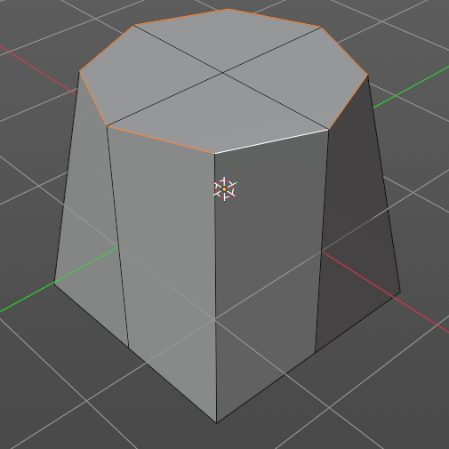
Select the loop of mesh geometry, activate the tool. In the Last Operator panel, you can then adjust properties after the operation.
Last Operator To Sphere
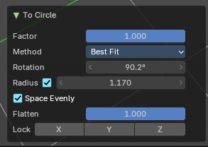
| Entry | What it does |
|---|---|
| Factor | Controls the strength of the circular transformation. – 1.000: full circle. – < 1.000: partial influence, blending with original shape. |
| Method | Defines how the circle is calculated: – Best Fit: fits a circle to the selection using least-squares approximation. – Interior Fit: Moves vertices inward toward the center of the selection. |
| Rotation | Applies a rotational offset to the resulting circle. |
| Radius | Sets a fixed radius for the circle. |
| Space Evenly | Distributes vertices evenly along the circle’s perimeter. – Enabled: uniform spacing. – Disabled: preserves original spacing. |
| Flatten | Controls how much the selection is flattened onto a plane before circularization. – 1.000: full flattening. – 0.000: preserves original depth variation. |
| Lock Axis (X, Y, Z) | Constrains transformation to specific axes. Useful for maintaining symmetry or aligning with existing geometry. |
Shear
Shear shears the selection.
In Object mode this tools requires to have more than one object selected.
The shear tool works along a imaginary 2d plane. The shear axis controls if the items are sheared along the x or the y axes of this plane. This is the plane along which the transformation happens. You can shear along the x or the y axis of this plane.
To make things even more complicated, the orientation of this imaginary plane is defined by the Axis and Axis Ortho items below.
Last Operator Shear

Offset
Adjust an offset.
Axis

Defines one axis of the imaginary shear axis plane.
Axis Ortho
Defines the other axis of the imaginary shear axis plane.
Orientation

Choose the orientation for the shear action.
Mirror Editing
Enable mirror editing.
Proportional editing
Enables proportional editing. Activating proportional editing reveals further settings.
| Entry | What it does |
|---|---|
| Proportional Falloff | Adjust the falloff methods. |
| Proportional Size | See and adjust the falloff radius. |
| Connected | The proportional falloff gets calculated for connected parts only. |
| Projected(2D) | The proportional falloff gets calculated in the screen space. Depth doesn't play a role. When it's in the radius, then it gets calculated. |
Bend
Bends the selection.
Push/Pull
It pushes or pulls the object positions relative to the center of the selection.
In Object mode this tool requires to have more than one object selected.
Last Operator Push/Pull

| Entry | What it does |
|---|---|
| Distance | Adjust the distance of influence of the tool. |
| Mirror Editing | Enable mirror editing. |
Proportional editing
Enables proportional editing. Activating proportional editing reveals further settings.
| Entry | What it does |
|---|---|
| Proportional Falloff | Adjust the falloff methods. |
| Proportional Size | See and adjust the falloff radius. |
| Connected | The proportional falloff gets calculated for connected parts only. |
| Projected(2D) | The proportional falloff gets calculated in the screen space. Depth doesn't play a role. When it's in the radius, then it gets calculated. |
Warp

Warps a mesh selection between two defined points.
Last operator Warp
| Entry | What it does |
|---|---|
| Warp Angle | The strength of the warp effect |
| Offset Angle | An offset angle to bend side wards. |
Min

The start point.
Max
The end point.
Randomize
This tool allows randomizes the positions of the selected vertices.
Last Operator Randomize

| Entry | What it does |
|---|---|
| Amount | Adjust the amount. |
| Uniform | The uniform offset distance. |
| Normal | Align the offset direction to the normals. |
| Random Seed | The seed value for randomization. |
Shrink/Fatten
Shrink/Fatten scales the selected geometry along its normals. Transform orientation and Pivot point gets ignored.
A positive value pushes the vertices outwards. A negative value pushes the vertices inwards.
Last Operator Shrink/Fatten
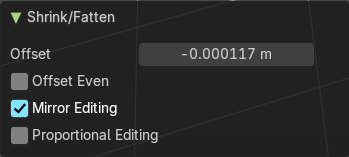
The Last Operator Shrink/Fatten panel gives you tools to adjust the Shrink/Fatten operation. Here you have numeric input for the strength and a few more options.
| Entry | What it does |
|---|---|
| Offset | Offset is the strength of the offset for Shrink/Fatten. |
| Offset Even | Offset Even scales the selection to give more thickness in even areas. |
| Mirror Editing | Enable mirror editing. |
Proportional editing
Enables proportional editing. Activating proportional editing reveals further settings.
| Entry | What it does |
|---|---|
| Proportional Falloff | Adjust the falloff methods. |
| Proportional Size | See and adjust the falloff radius. |
| Connected | The proportional falloff gets calculated for connected parts only. |
| Projected(2D) | The proportional falloff gets calculated in the screen space. Depth doesn't play a role. When it's in the radius, then it gets calculated. |
Skin Resize
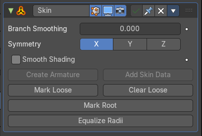
This tool requires to have a skin modifier at the mesh. It scales the thickness of the skin.
While the operation you will see in the header the strength value for the skin.
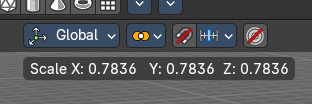
Last Operator Skin Resize
Vector
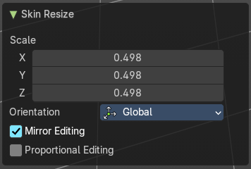
Adjust the position values for the three values.
Scale X, Y, Z
Limit the position relative to the source object.
Orientation

Orientation is a drop-down box choose the type of orientation for the mirroring action.
Mirror Editing
Enable mirror editing.
Proportional editing
Enables proportional editing. Activating proportional editing reveals further settings.
| Entry | What it does |
|---|---|
| Proportional Falloff | Adjust the falloff methods. |
| Proportional Size | See and adjust the falloff radius. |
| Connected | The proportional falloff gets calculated for connected parts only. |
| Projected(2D) | The proportional falloff gets calculated in the screen space. Depth doesn't play a role. When it's in the radius, then it gets calculated. |
Move Texture Space
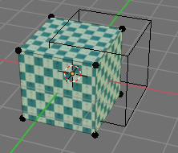
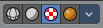
This tool relies at the move tool. With the difference that it moves the texture space instead of the object. It has also a very special use case, and just works with a material with a Texture Coordinate / Generated node. And requires to have the shading at Material or Rendered to see a result in the viewport.
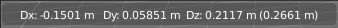
In the viewport you will see the UV cage in black color. In the header you will see the values for the current position of the UV cage.
Note that once done and applied, there is no way to reset the UV cage back to zero. When you repeat the operation, then the values will start at 0 again. Even when the UV cage is already offset.
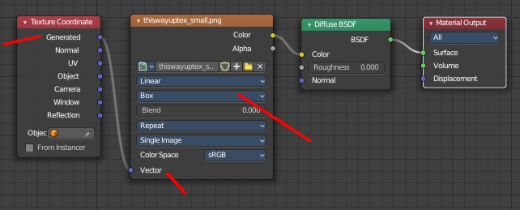
Last Operator Move
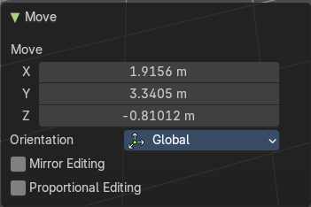
Move
Adjust in which directions you want to transform.
Orientation
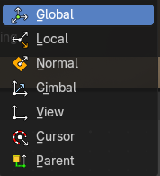
Choose the orientation.
Mirror Editing
Enable mirror editing.
Proportional editing
Enables proportional editing. Activating proportional editing reveals further settings.
| Entry | What it does |
|---|---|
| Proportional Falloff | Adjust the falloff methods. |
| Proportional Size | See and adjust the falloff radius. |
| Connected | The proportional falloff gets calculated for connected parts only. |
| Projected(2D) | The proportional falloff gets calculated in the screen space. Depth doesn't play a role. When it's in the radius, then it gets calculated. |
Scale Texture Space
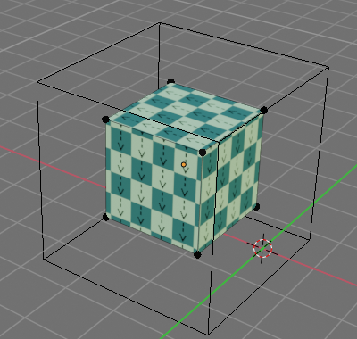
Scale Texture space is similar to the Move texture Space. With the only difference that it scales the UV space instead of moving it.
This tool relies at the scale tool. With the difference that it scales the texture space instead of the object. It has also a very special use case, and just works with a material with a Texture Coordinate / Generated node. And requires to have the shading at Material or Rendered to see a result in the viewport.
In the viewport you will see the UV cage in black color. In the header you will see the values for the current position of the UV cage.
Note that once done and applied, there is no way to reset the UV cage back to zero. When you repeat the operation, then the values will start at 0 again. Even when the UV cage is already offset.
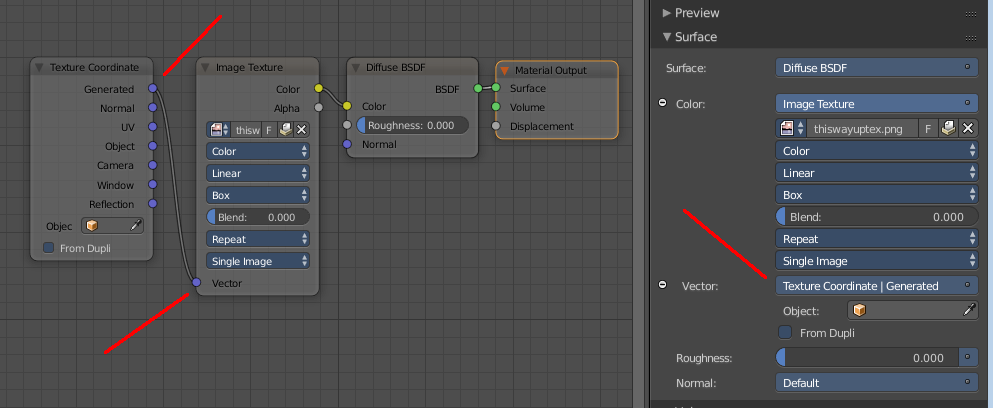
Last Operator Resize
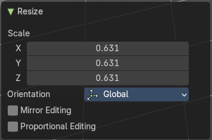
Scale
Adjust in which directions you want to transform.
Orientation
Choose the orientation.
Mirror Editing
Enable mirror editing.
Proportional editing
Enables proportional editing. Activating proportional editing reveals further settings.
| Entry | What it does |
|---|---|
| Proportional Falloff | Adjust the falloff methods. |
| Proportional Size | See and adjust the falloff radius. |
| Connected | The proportional falloff gets calculated for connected parts only. |
| Projected(2D) | The proportional falloff gets calculated in the screen space. Depth doesn't play a role. When it's in the radius, then it gets calculated. |
Set Dimensions
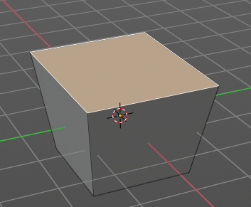
Edit Mode Only!
Normally all scale operations in Bforartists are relative to the current selection and dimensions. And you always start with a relative value of 1.
Set dimensions allows to scale mesh selections in absolute world values. No matter how the initial values are. The new values gets set in the Last Operator.
Set dimensions is an add-on. You can turn it off in the add-ons section of the user preferences when you want.
Last Operator Set Dimensions
New Dimensions
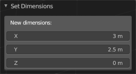
When you activate the tool then you will see the world coordinates of the selection. Change the values to other world coordinates.
Mirror
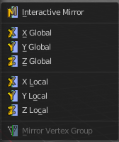
Mirror mirrors the selected geometry along the defined axis.
Interactive Mirror
Mirror by hotkeys. You activate the tool, type in x for x global for example, or x x for x local. And the selection gets mirrored
X Global, Y Global etc.
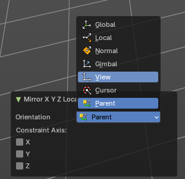
Mirrors the selection around the chosen axis.
Last Operator Mirror
The Last Operator Mirror panel gives you tools to adjust the mirror action.
Orientation
Orientation is a drop-down box choose the type of orientation for the mirroring action.
Constraint Axis
Constraint Axis gives you again the possibility to define the mirror axis. You can choose more than one axis here.
Mirror Vertex Group
This tool requires to have a vertex group assigned. It mirrors the selected vertex group.
This tool works only with a perfectly symmetrical mesh along the local X axis. Vertices that have no corresponding vertex on the other side will not be affected.
Last Operator Mirror Vertex Group
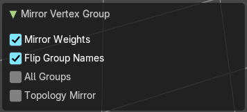
| Entry | What it does |
|---|---|
| Mirror Weights | Mirrors the Weight Painting informations from the symmetrical counterpart. When both are selected it will become a group and weight information exchange. If only one is selected, then the information from the unselected vertice will go to the selected vertice. |
| Flip Group Names | Flip selected group names. This works with vertex groups with symmetrical name conventions. Like .L , .R, right, left. |
| All Groups | Pass information to all groups instead of the active one. |
| Topology Mirror | Use topology based mirroring. |
Snap

Choose several methods to snap one element to another. The menu items should be self explaining.
Last operator Snap Selection to Cursor
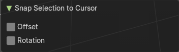
| Entry | What it does |
|---|---|
| Offset | Keep the offset of the selected objects to each other. |
| Rotation | Rotate the selection to match cursor. |
Single Operators
Duplicate
Duplicates the current selection.
When you duplicate a selection, then it sticks to the mouse until you left click. And moves around. A right click repositions the duplicated geometry at its original location.
Last Operator Duplicate
Mode
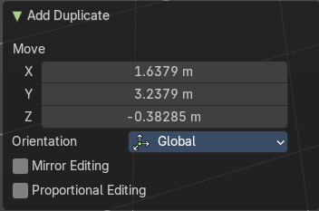
Not to find out. No tool tip, no entry in the Blender manual. Good Job Blender Developers.
Move X, Y, Z
Adjust the position.
Orientation

Orientation is a drop-down box choose the type of orientation for the mirroring action.
Mirror Editing
Enable Mirror Editing.
Proportional editing

Enables proportional editing. Activating proportional editing reveals further settings.
| Entry | What it does |
|---|---|
| Proportional Falloff | Adjust the falloff methods. |
| Proportional Size | See and adjust the falloff radius. |
| Connected | The proportional falloff gets calculated for connected parts only. |
| Projected(2D) | The proportional falloff gets calculated in the screen space. Depth doesn't play a role. When it's in the radius, then it gets calculated. |
Extrude
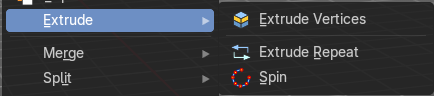
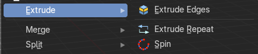
Extrude is a sub menu with several extrude methods. The contend is dependent of the mesh select mode.
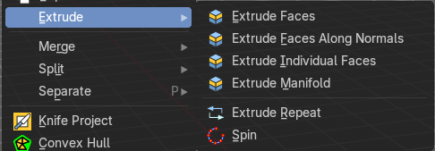
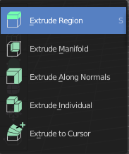
Note that the tool shelf also contains extrude functionality. And a few methods here are a double. These are marked as legacy here in the manual.
Extrude Vertices
Extrudes out the selected vertices by moving the mouse.
Last Operator Extrude Only Vertices and Move
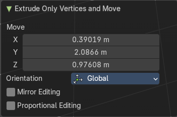
Move X Y Z
The coordinates for the extruded geometry.
Orientation
Choose the type of orientation, in which coordinate system the action should happen.
Mirror Editing
Enable Mirror Editing.
Proportional editing
Enables proportional editing. Activating proportional editing reveals further settings.
| Entry | What it does |
|---|---|
| Proportional Falloff | Adjust the falloff methods. |
| Proportional Size | See and adjust the falloff radius. |
| Connected | The proportional falloff gets calculated for connected parts only. |
| Projected(2D) | The proportional falloff gets calculated in the screen space. Depth doesn't play a role. When it's in the radius, then it gets calculated. |
Extrude Edges
Extrudes out the selected edges by moving the mouse.
Last Operator Extrude Only Edges and Move
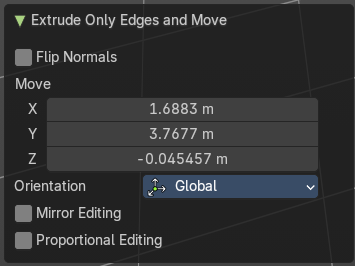
| Entry | What it does |
|---|---|
| Flip Normals | Flip the normals at the involved faces. |
| Move X Y Z | The coordinates for the extruded geometry. |
Orientation
Choose the type of orientation, in which coordinate system the action should happen.
Mirror Editing
Enable Mirror Editing.
Proportional editing
Enables proportional editing. Activating proportional editing reveals further settings.
| Entry | What it does |
|---|---|
| Proportional Falloff | Adjust the falloff methods. |
| Proportional Size | See and adjust the falloff radius. |
| Connected | The proportional falloff gets calculated for connected parts only. |
| Projected(2D) | The proportional falloff gets calculated in the screen space. Depth doesn't play a role. When it's in the radius, then it gets calculated. |
Extrude Faces (Legacy)
Extrude the selected faces along their normals. This functionality is part of the Extrude Region tool in the tool shelf.
Last Operator Extrude Region and Move
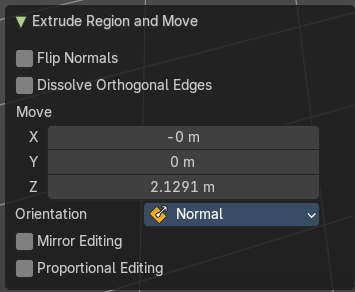
| Entry | What it does |
|---|---|
| Flip Normals | Flips the normals of the extruded faces. |
| Dissolve Orthogonal Edges | Dissolves orthogonal edges at extrusion. |
| Move X, Y Z | The position. Attention, the actual world orientation and rotation does not matter here. It always starts with a value of zero, and moves relative to this zero then. For the actual location values have a look in the sidebar in the transform panel. |
Orientation
The extrusion can have different orientations. The menu items should be self explaining.
Mirror Editing
Enable Mirror Editing.
Proportional editing
Enables proportional editing. Activating proportional editing reveals further settings.
| Entry | What it does |
|---|---|
| Proportional Falloff | Adjust the falloff methods. |
| Proportional Size | See and adjust the falloff radius. |
| Connected | The proportional falloff gets calculated for connected parts only. |
| Projected(2D) | The proportional falloff gets calculated in the screen space. Depth doesn't play a role. When it's in the radius, then it gets calculated. |
Extrude Faces along Normals (Legacy)
In the toolshelf it's the Extrude Along Normals tool. Extrudes the selection along local normals. You won't see a widget here. Simply drag.
The method works the same in all Mesh select modes. Vertice, Edge and Face Mode.
Last Operator Extrude Region and Shrink/Fatten
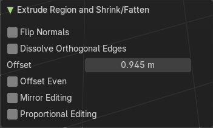
| Entry | What it does |
|---|---|
| Flip Normals | Flips the normals of the extruded faces. |
| Dissolve Orthogonal Edges | Dissolves orthogonal edges at extrusion. |
| Offset | The current extrude amount. |
| Offset Even | Scales the offset to give more even thickness. Without this checked the farer away faces will have a bigger extrude amount. |
| Mirror Editing | Enable Mirror Editing. |
Proportional editing
Enables proportional editing. Activating proportional editing reveals further settings.
| Entry | What it does |
|---|---|
| Proportional Falloff | Adjust the falloff methods. |
| Proportional Size | See and adjust the falloff radius. |
| Connected | The proportional falloff gets calculated for connected parts only. |
| Projected(2D) | The proportional falloff gets calculated in the screen space. Depth doesn't play a role. When it's in the radius, then it gets calculated. |
Extrude Individual Faces ( Legacy)
In the tool shelf the tool is called Extrude Individual. Extrudes the selection along local normals of each individual face. You won't see a widget here. Simply drag.
The method works the same in all Mesh select modes. Vertice, Edge and Face Mode.
Last Operator Extrude Individual Faces and Move
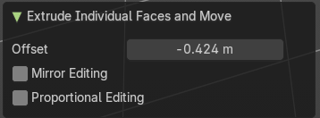
| Entry | What it does |
|---|---|
| Offset | The current extrude amount. |
| Mirror Editing | Enable Mirror Editing. |
Proportional editing
Enables proportional editing. Activating proportional editing reveals further settings.
| Entry | What it does |
|---|---|
| Proportional Falloff | Adjust the falloff methods. |
| Proportional Size | See and adjust the falloff radius. |
| Connected | The proportional falloff gets calculated for connected parts only. |
| Projected(2D) | The proportional falloff gets calculated in the screen space. Depth doesn't play a role. When it's in the radius, then it gets calculated. |
Extrude Manifold (Legacy)
The same tool exists in the tool shelf. Extrude, dissolve Edges whose faces form a flat surface, and intersect new edges.
The method works the same in all Mesh select modes. Vertice, Edge and Face Mode.
Last Operator Extrude Manifold
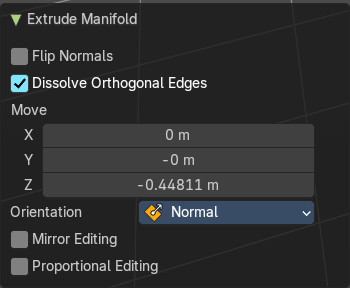
| Entry | What it does |
|---|---|
| Flip Normals | Flips the normals of the extruded faces. |
| Dissolve Orthogonal Edges | Dissolve edges that are at the same straight surface. |
| Move X, Y Z | The position. Attention, the actual world orientation and rotation does not matter here. It always starts with a value of zero, and moves relative to this zero then. For the actual location values have a look in the sidebar in the transform panel. |
Orientation
The widget can have different orientations. The menu items should be self explaining.
Mirror Editing
Enable Mirror Editing.
Proportional editing
Enables proportional editing. Activating proportional editing reveals further settings.
| Entry | What it does |
|---|---|
| Proportional Falloff | Adjust the falloff methods. |
| Proportional Size | See and adjust the falloff radius. |
| Connected | The proportional falloff gets calculated for connected parts only. |
| Projected(2D) | The proportional falloff gets calculated in the screen space. Depth doesn't play a role. When it's in the radius, then it gets calculated. |
Extrude Repeat
All modes. Extrudes into the Z depth of the viewport, and repeats the extrusion by the adjusted amount. You have to adjust the extrusion afterwards.
Last Operator Extrude Repeat
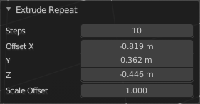
Steps
How much repetitions.
Offset X / Y / Z
The offset in the x y and z direction.
Scale Offset
The scale factor of the extruded element.
Spin
All modes. Extrudes in a curve form.
Last Operator Spin
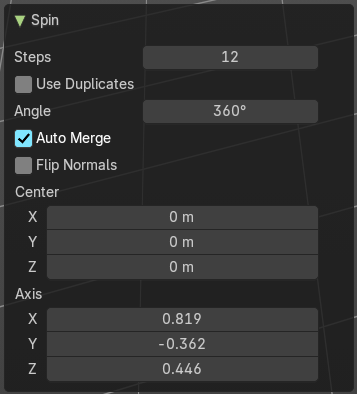
| Entry | What it does |
|---|---|
| Steps | How much segments. |
| Use Duplicates | Creates not connected geometry. In Vertex mode single vertices for example. Auto Merge and Flip Normals will not be available with duplicates. |
| Angle | The angle to extrude. |
| Auto Merge | Merge first and last element when the extrude is a full circle. |
| Flip Normals | Flip the normals of the extruded geometry. |
| Center X / Y / Z | The center point of the spin circle. |
| Axis | Axis in global View space. The values goes from -1 to 1. |
Merge
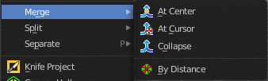
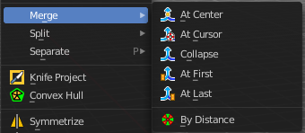
Merges the geometry.
At Center, At Cursor, Collapse, At First, At Last
Merges the geometry with the given methods.
The methods At First and At Last just shows when you have vertices selected, and there is at least one first vertice and one last vertice to merge at. So minimum two. But you can have more than one vertices selected.
Last Operator Merge
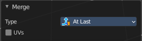
| Entry | What it does |
|---|---|
| Type | Choose the merge method again. |
| UV's | Move the UV's according to the merge. |
By Distance
Merge the vertices by their distance to each other. This tool is meant to remove double vertices at the same location.
Last Operator Merge by Distance
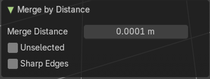
| Entry | What it does |
|---|---|
| Merge Distance | Adjust the distance below which the vertices gets merged. Merge selected vertices to unselected vertices. |
| Unselected | Merge unselected geometry. |
| Sharp Edges | Calculate sharp edges using available normal custom data. |
Split
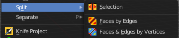
Selection
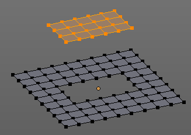
Split splits the edges between the selected vertices. It creates two edges out of one. And splits the edge by that.
The mode doesn't matter. There will always the edges be splitted.
Faces by Edges / Faces by Edges by Vertices
Splits selected edges so that each neighbor face gets its own copy. You have two methods here.
Last Operator Edge Split
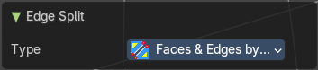
Type
Choose the method again.
Separate
Separate separates the selected geometry, and creates a new object. The geometry becomes uneditable, since it is now a new object. You will have to leave the Edit mode, select the new object, and re-enter Edit mode when you want to edit it.
| Entry | What it does |
|---|---|
| Selection | Selection separates the current selection. |
| By Material | By Material separates all geometry that has the same material than the current selection. |
| By Loose Parts | By Loose parts separates all geometry that is connected by edges to the current selection. |
Knife Project
Knife Project uses an object as a knife to cut edges into a mesh.
Usage: Create a cube. Create a circle. Move the circle in front of the cube so that the geometry does not overlap the cube geometry. Enter Edit Mode with the cube. In the outliner hold down Shift, and select the circle. Note that you can select the circle in the 3d view with holding down Ctrl.
Now that both objects are selected, go into front view, or whatever view you want. Just make sure that in the view the circle covers a part of the cube. Projection of the cut happens from the current view. Click the Knife Project tool.
Last Operator Knife Project
Cut through
The cut goes through the whole object when the Cut through checkbox is ticked.
Convex Hull
Creates a convex hull around the outside of selected vertices. The old faces and inlaying vertices gets removed.
Last Operator Convex Hull
Delete Unused
Removes vertices that are not part of the convex geometry.
Use existing Faces
Use existing input faces that lies on the hull where possible. This option allows to have N-Gons in the convex hull.
| Entry | What it does |
|---|---|
| Make Holes | Deletes edges and faces in the hull that were part of the input. This allows to delete faces between the existing mesh and the convex hull. |
| Join Triangles | Joins adjacent triangles into quads. |
| Max Face Angle | Max Face Angle belongs to the Join Triangles setting. Set the maximum face angle. |
| Max Shape Angle | Max Face Angle belongs to the Join Triangles setting. Set the maximum shape angle. |
| Topology influence | How much to priorize regular grids of quads as well as quads that touch existing quads. |
| Compare UV's | Takes existing UV patches for the calculation into account. |
| Compare Color Attributes | Takes existing color attributes for the calculation into account. |
| Compare Seam | Takes existing seams for the calculation into account. |
| Compare Sharp | Takes existing sharp edges for the calculation into account. |
| Compare Materials | Takes existing materials for the calculation into account. |
| Deselect joined | Only select remaining triangles that were not merged. |
Symmetrize
The Symmetrize tool mirrors the selected geometry symmetrical along a world axis.
Last Operator Symmetrize
Direction
Direction is a drop down box define the mirroring direction.
Threshold
Adjust a distance after which the mirroring should happen, relative to the mirror axis. 0 means it mirrors the geometry directly at the axis.
Snap to Symmetry
Tries to snap the selected vertices symmetrical along the chosen world orientation.
Last Operator Snap to Symmetry
| Entry | What it does |
|---|---|
| Direction | The calculation direction. |
| Threshold | The threshold defines the radius in which matching vertices gets located. When you get a warning that snapping failed try increasing the threshold value. |
| Factor | The snapping factor. Blend mirrored locations from one side to the other. 0.5 is blending both sides equal. |
| Center | Snap vertices in the center axis to zero. |
Normals
This menu contains functionality about dealing with normals. Normals influences the shading and the direction of a face. They can point inwards or outwards. And edges can be split. So that two adjacent faces have a sharp edge.
You can activate the display of normals in the Overlays panel in Edit mode.
Recalculate Outside
Recalculates the normals of the selected geometry so that everything points outwards.
Recalculate Inside
Recalculates the normals of the selected geometry so that everything points inwards.
Last Operator Recalc Outside
Inside
Inside recalculates the normals of the selected geometry so that everything points inwards.
Flip
Flips the direction of the normals of the selected geometry.
Last Operator Flip Normals
Custom Normals only
Only flip the custom loop normals of the selected elements.
Set from Faces
Sets the vertex normals from the selected faces. This tool requires to have Auto smooth activated!
Last Operator Set Normals from Faces
Keep Sharp Edges
Don’t set sharp edges to faces.
Rotate
Rotate the normals of the selected vertices manually.
Last Operator Rotate Normals
| Entry | What it does |
|---|---|
| Angle | The angle of the selected normal(s). |
| Axis | The axis to rotate around. |
Orientation
Choose the type of orientation, in which coordinate system the action should happen.
Mirror Editing
Enable mirror editing.
Point Normals to Target
All vertex normals will point to a specific target. This target can be chosen from hotkeys. They show in the header.
Pressing R for Reset will reset the normals to where they were before the operation.
Last Operator Point Normals to Target
| Entry | What it does |
|---|---|
| Invert | The normal directions are reversed from what is specified. |
| Align | All normals will point in the same direction. |
| Target | The target position. |
| Spherize | Each normal will be interpolated between its original value and the direction to the target. |
| Entry | What it does |
|---|---|
| Merge | Merge all of the normals at selected vertices, making one average normal for all of the faces. |
| Split | Split the normals at all selected vertices so that there are separate normals for each face, pointing in the same direction as those faces. |
Average
Average all of the normals in each fan of faces between sharp edges at a vertex.
| Entry | What it does |
|---|---|
| Custom Normal | Take the average of vertices normals. |
| Face Area | Set all vertices normals by face area. |
Corner Angle
Set all vertices by corner angle.
Last Operator Average Normals
Type
Choose the average type again.
| Entry | What it does |
|---|---|
| Weigh | Just for custom normals method. Weight applied by face. |
| Threshold | Just for custom normals method. Threshold value for different weights to be considered as equal. |
Copy Vectors
Copies the normals of a single selected vertice.
Paste Vectors
Pastes the normals from a formerly copied selected vertice to the currently selected vertice.
Last Operator Normals Vector Tools
Absolute Coordinates
When you paste normals then they get pasted relative to the current orientation of the selected vertice. With absolute coordinates the normals gets pasted in world coordinates.
Smooth Vectors
Smooth custom normals towards the adjacent vertex normals.
Last Operator Smooth Normals Vectors
Factor
Adjust how strong the smoothen should be.
| Entry | What it does |
|---|---|
| Reset Vectors | Resets the normal of the selected element(s). |
| Select by Face Strength | Face strength gets used by the Weighted Normals modifier. See Face Influence checkbox. Select faces with either weak or medium or strong face strength. |
Set Face Strength
Face strength gets used by the Weighted Normals modifier. See Face Influence checkbox.
Set selected faces to either a weak, a medium or a strong face strength.
Last Operator Face Normal Strength
Set Value
Unticked it selects by face strength by weak, medium or high. Ticked it sets the face strength to weak, medium or high.
Face Strength
Resets the normal of the selected element(s).
Shading
Sets the shading of the selected elements to either smooth or flat.
Shading is under the hood a normals operation.
| Entry | What it does |
|---|---|
| Shade smooth | Display shading smooth. |
| Shade Flat | Display shading flat. |
Smooth Edges
Clear as sharp marked edges and set them to smooth.
Last Operator Clear Sharp
Vertices
Consider vertices instead of edges to select which edges to set to smooth.
Sharp Edges
Mark selected edges as sharp.
Last Operator Mark Sharp
Vertices
Consider vertices instead of edges to select which edges to set to sharp.
Smooth Vertices
Clear as sharp marked edges and set them to smooth. But the calculation happens from the selected vertices instead of the edges.
Last Operator Clear Sharp from Vertices
Vertices
Consider vertices instead of edges to select which edges to set to sharp.
Sharp Vertices
Mark selected edges as sharp. But the calculation happens from the selected vertices instead of the edges.
Last Operator Mark Sharp from Vertices
Vertices
Consider vertices instead of edges to select which edges to set to sharp.
Weights
The Weights menu contains Weight tools. Those tools are meant to modify the weight mapping. At characters for example. The Weight Tools requires Vertex Groups to work with. Such Vertex groups gets created when you do weight painting at a character for example. Here is defined what bone is connected to what vertice.
In Edit Mode the weight mapping doesn't show. Here you work with the Vertex Groups.
In Weight paint mode the weight painting shows with colors. Here you usually paint the weighting.
This menu items also exists in Weight Paint mode.
Legacy sub menu
Contains legacy menu items. They can currently not be activated.
Normalize All
While weight painting it can happen that a vertice gets several weightings assigned. Normalize all normalizes the weight of all Vertex groups so that the values for the single vertices in the sum is 1.
Last Operator Normalize all
Subset
Subset is a drop-down menu choose the Subset method.
Lock Active
Keep the values of the active group while normalizing others.
Normalize
Normalize normalizes the weight of the current selected Vertex group so that the values for the single vertices in the sum is 1. Means when there is influence from other groups, then those values are kept, but the one for the current group gets lowered so that the sum is 1.
The Last Operator Normalize panel has no adjustable settings.
Mirror
Mirror Vertex Group mirrors Vertex Groups and flips weights and/or names. It only edits selected Vertices. It flips when both sides are selected. Otherwise it copies from Unselected.
Last Operator Mirror Vertex Group
| Entry | What it does |
|---|---|
| Mirror Weights | With Mirror Weights ticked it mirrors the weights. |
| Flip Group Names | With Flip Group Names ticked it flips the Group names. |
| All Groups | Mirrors all Vertex Groups |
| Topology Mirror | Uses topology based mirroring. This requires matching mirrored topology. |
Invert
Invert inverts the weight painting for the selected vertex group.
Last Operator Invert Vertex Group
Subset
Subset is a drop-down menu choose the Subset method.
Add Weights
Add Vertices from Groups that have zero Weighting before inverting.
Remove Weights
Remove Vertices from Groups that have zero weight after inverting.
Clean
Removes Vertex group assignments that are not required from the active vertex group.
Last Operator Clean Vertex Group
Subset
Subset is a drop-down menu choose the Subset method.
| Entry | What it does |
|---|---|
| Limit | Remove weights that are below or equal to the limit value. |
| Keep Single | Keep Vertices assigned to at least one vertex group when cleaning. |
Quantize
Quantize quantizes the weight paint values. It starts with 4 steps. With a step of 1 you have a single vertex color, no matter how you have painted it before.
Last Operator Quantize
| Entry | What it does |
|---|---|
| Subset | Subset is a drop-down menu choose the Subset method. |
| Steps | Here you adjust in how many steps the weight paint colors should be divided. |
Levels
Adds some offset to the Weight paint, and multiplys it with some gain.
Last Operator Vertex Group Levels
Subset
Subset is a drop-down menu choose the Subset method.
Offset
Here you adjust the offset.
Gain
Here you adjust the gain.
Smooth
Smooths the weight for selected vertices.
Last Operator Smooth Vertex Weights
Subset
Subset is a drop-down menu choose the Subset method.
| Entry | What it does |
|---|---|
| Factor | Here you adjust the factor. |
| Iterations | Here you adjust how many iterations you use. |
| Expand/Contract | Expand or contract the weights. |
Limit Total
Limit number of Weights per vertex. The lowest weights gets removed.
This is of interest when you have for example five bones associated with a vertice. But your game engine just allows four ...
Last Operator Limit Number of Weights per Vertex
Subset
Subset is a drop-down menu choose the Subset method.
Limit
Here you adjust how many weights are allowed.
Locks
The locks from the Vertex groups as operators.
Set Attribute
Set values of the active attribute for the selected element. It calls a popup where you can add an attribute. A vertex group index number or a uv map value for example. It depends of the element.
Sort Elements
Sort Elements is a menu with different sorting methods. It allows you to reorder the mesh indices of the selected mesh elements by various methods.
The indices can be turned on in the Overlays menu.
View Z Axis
Sorts along the active view’s Z axis, from farthest to nearest. You can use Reverse if you want it the other way.
View Y Axis
Sorts along the active view’s Y axis, from farthest to nearest. You can use Reverse if you want it the other way.
Cursor Distance
Sorts from nearest to farthest away from the 3D cursor position.
Material
Faces only! Sorts faces by their lowest material index up to highest material index. Order of faces inside each of those material groups remains unchanged.
Note that the Reverse option only reverses the order of the materials**.* And* the order of the faces inside them.
| Entry | What it does |
|---|---|
| Selected | Moves all selected elements to the beginning without affecting their relative orders. Attention, this option will also affect unselected element indices! |
| Randomize | Randomizes the indices of selected elements. This option does not affect the unselected elements. |
Reverse
Reverses the order of the selected elements.
Last Operator Sort Mesh Elements
Sort Elements always brings up the same last operator. But with a small difference for Randomize and Reverse. Reverse has no checkbox. And Randomize has a Seed checkbox.
Type
This is a drop-down box choose the sort method again.
| Entry | What it does |
|---|---|
| Vertices, Edges or Faces | Adjust if the sort will affect the vertices, edges or faces. |
| Reverse | Reverses the sorting. |
Seed Edit box (Randomize only)
The seed option allows you to get another randomization – the same seed over the same mesh/set of selected elements will always give the same result!
Subdivide
Subdivide is a menu where you can quickly add and change a subdivision surface modifier with a predefined resolution in a quick way. Especially when you use the hotkey for it. The subdivision surface modifier panel can then as usual be found in the Properties editor in the Modifier tab.
Last Operator Subdivision Set
| Entry | What it does |
|---|---|
| Level | Set the level of subdivisions |
| Relative | Applies the sub surf level as an offset to the already existing sub surf level. |
Show / Hide

The Show/Hide menu is available for all object types and in all modes. It is usually in the object related menu to find. In Object mode it's the Object menu, for a curve object in edit mode it is the Curve menu. It always contains three menu items. Show Hidden, Hide Selected and Hide Unselected.
| Entry | What it does |
|---|---|
| Show Hidden | Makes all hidden elements in the scene visible again. |
| Hide Selected | Hides the selected elements. |
Hide Unselected
Hides the not selected elements. The selected elements stays visible.
Last Operator Reveal Hidden / Hide Selected

Select
Define if the selected or the unselected elements gets hidden or revealed.
Cleanup
In the Cleanup menu you will find tools to clean up the current geometry.
Delete Loose
Delete loose deletes not connected geometry. Vertices, Edges, and Faces. The tool starts with deleting Vertices and Edges. But you can tick Faces in the Last Operator too, and then it also removes not connected Faces.
Last Operator Delete Loose
Vertices
Delete Vertices.
| Entry | What it does |
|---|---|
| Edges | Delete Edges. |
| Faces | Delete Faces. |
Decimate Geometry
Decimate Geometry decimates the currently selected geometry. It starts with a Ratio of 1. Which means no decimation. The lower the ratio the more decimation you will get. The Decimate Modifier works with Tris!
Last Operator Decimate Geometry
Ratio
Adjust the strength of decimation.
| Entry | What it does |
|---|---|
| Vertex Group | Use active Vertex Group as an influence. You need to have a Vertex Group. |
| Weight | Adjust the Vertex Group Strength. |
| Invert | Invert Vertex Group Influence. |
| Symmetry | Make the decimation geometry symmetric along a chosen world axis. |
Degenerate Dissolve
Removes zero size Faces and Edges.
Last Operator Degenerate Dissolve
Merge Distance
Maximum distance between elements to merge.
Make Planar Faces
Make Planar Faces tries to make the selected faces planar. Quads or N-Gons for example can have vertices that are not planar.
Last Operator Make Planar Faces
Factor
Here you adjust how strong the influence should be.
Iterations
Here you adjust how often it should repeat in the try to find a solution.
Split Non-Planar Faces
Split Non Planar Faces splits up non planar Quads and N-Gons to end in planar faces.
Last Operator Split Non-Planar Faces
Max Angle
Limit the action to a maximum angle.
Split Concave Faces
Splits concave faces to make the geometry more stable. This tool is thought for N-Gons.
Fill Holes
Fill holes closes holes in the mesh geometry.
Fill holes can just calculate one face size at one time. So when you have several holes in the mesh, let's say one is a tri, and one is a quad, then you need to calculate twice.
Last Operator Fill Holes
Sides
Define what face size will be filled.
Delete
The smart delete add-on. usually does the delete job already fine. It deletes the selected element(s).
There are sometimes some situations where you need more control over what you want to delete. The tools for this can be found in the Delete menu.
Vertices
Deletes the selected vertices, and all with it connected edges and faces.
Edges
Deletes the selected edges and the connected faces.
Faces
This one works similar to the smart delete. It deletes the selected faces.
| Entry | What it does |
|---|---|
| Only Edges and Faces | This mode is of interest when you have more than one selection mode activated. It deletes then just the selected edges and faces. And not single vertices. |
| Only Faces | This mode is of interest when you have more than one selection mode activated. Just selected faces gets deleted. Not single edges or vertices. |
Edge Loops
This method works similar to the smart delete tool. It deletes the edge loop. But it selects the faces of the edge ring. And the Last operator offers you the option to split off face corners.
Last Operator Delete Edge Loop
Face Split
Split off face corners to maintain surrounding geometry.
Dissolve
Dissolve operations removes for examples selected vertices, edges and faces. But they are not delete operations. They are union tools.
When you for example choose Delete vertices from the mesh menu, then the involved faces can get deleted too. When you choose Dissolve vertices, then the vertices gets removed, and the faces stays intact. The edges gets unioned.
Dissolve is a union operation.
Dissolve Vertices
Dissolve Vertices dissolves the selected Vertices.
Note that pressing Del in Vertice select mode calls Dissolve Vertices already. It's the same operator. But you don't get the Last operator that way.
Last Operator Dissolve Vertices
| Entry | What it does |
|---|---|
| Face Split | Split off Face corners to maintain surrounding geometry |
| Tear Boundary | Split off Face corners instead of merging faces. |
Dissolve Edges
Dissolve Edges dissolves the selected Edges.
Note that pressing Del in Edge select mode calls Dissolve Edges already. It's the same operator. But you don't get the Last operator that way.
Last Operator Dissolve Edges
Dissolve Vertices
When the dissolve operation leaves vertices behind, then this vertices will be dissolved too.
| Entry | What it does |
|---|---|
| Angle Threshold | Remaining vertices which eseparate edge pairs are preseved if their edge angle exceeds this threshold |
| Face Split | Split off Face corners to maintain surrounding geometry. |
Dissolve Faces
Dissolve Faces removes the inlaying edges of the selected faces. This faces becomes one big N-Gon.
Last Operator Dissolve Faces
Dissolve Vertices
When the dissolve operation leaves vertices behind, then this vertices will be dissolved too.
Limited Dissolve
Dissolve selected edges and vertices, limited by the surrounded angles.
Last Operator Limited Dissolve
Max Angle
The angle limit up to which the dissolve happens.
| Entry | What it does |
|---|---|
| All Boundaries | Dissolve all vertices in between face boundaries. |
| Delimit | By which element to delimit. |
Dissolve Selection
Dissolves the selected geometry.
Last Operator Dissolve Selection
| Entry | What it does |
|---|---|
| Dissolve Verts | When the dissolve operation leaves vertices behind, then this vertices will be dissolved too. |
| Face Split | Split off Face corners to maintain surrounding geometry. |
| Tear Boundary | Split off face corners instead of merging faces. |
Collapse Edges & Faces
Collapses the selected edges or faces to a vertice at the center of the selection.
Mesh Select Mode
Mesh Select mode is a sub menu Set the current mesh select mode. Its functionality is equal to the mesh select mode buttons in the header. Just that you can't select more than one mode directly here.
This menu just exists to show and to edit the hotkeys. Not to work with it.
Smart Delete
Smart Delete
Smart delete deletes what is selected in an intelligent way. When you for example delete an edge then the edge gets deleted. But it also deletes the vertices connected to this edge. It performs a Dissolve operation under the hood.
There is also a Delete and Dissolve menu in the Mesh menu, choose different methods for deleting if required.
Smart delete is an add-on. And can be deactivated if desired.